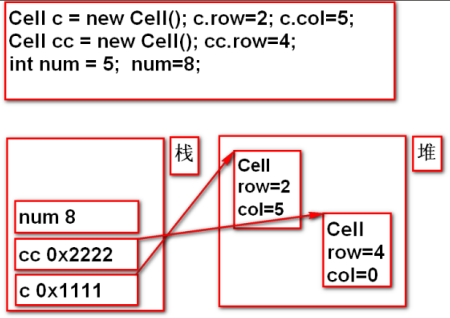
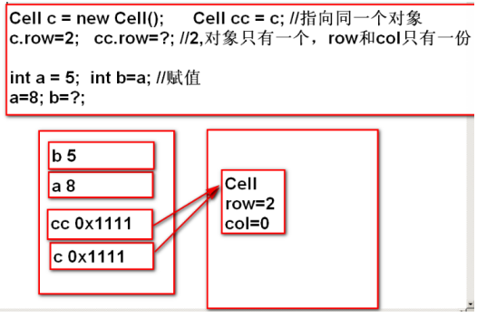

学习Java OOP的笔记。
方法（函数，过程）
封装特定的逻辑功能的、独立、只干一件事，可以被多次调用，结构清晰、便于维护。
法的签名：方法名+参数列表。
方法的重载（overload）:
同一个类中，方法名相同，参数列表不同。
编译器在编译时自动根据签名绑定调用不同的方法。
构造方法：构造器、构建器：
常常用于给成员变量初始化。
与类同名，没有返回值类型。
不写，默认无参的，自己写了就不再默认了，构造方法也可重载。
创建（new）对象时被自动调用，如（类、构造方法、方法）。
方法的重写（override）：
父子类中，方法的签名相同，方法体不同。重写的方法被调用时，看对象的类型。重写需符合”两同两小一大”原则：
两同：方法名相同，参数列表相同。
两小：
子类的返回值类型小于或等于父类（void和基本类型—-必须相等；引用类型———-小于或等于）。
子类抛出的异常小于或等于父类
一大：子类的访问权限大于或等于父类。
类（class）
类是一种抽象的数据类型（引用数据类型）。类不但定义了抽象数据类型的组成（成员变量），还定义了可以对该类型实施的操作（方法）。
对象：真实存在的单个个体；类：类型，代表一类个体。一个类可以创建多个对象，同一个类的多个对象，结构相同，数据不同。类是对象的模板，对象是类的具体的实例。
定义一个student类：
|
|
引用数据类型与基本数据类型的区别

引用数据类型与基本数据类型划等号的区别

Null与NullPointerException的演示

基本数据类型数组

引用类型数组

Java内存的管理
堆
1.存放new出来的对象。
2.成员变量的生命周期：创建对象时存在堆中，对象被垃圾回收器回收时一并消失。
3.垃圾：没有任何引用指向的对象，垃圾回收器不定时回收垃圾，调用System.gc()建议垃圾回收器快点来收垃圾。
4.内存泄露：不再使用的对象没有被及时的回收。
栈
1.用于存储程序正在用到的所有局部变量。
2.调用方法时，在栈中为该方法分配一块对应的栈帧，栈帧中存的是该方法中的所有局部变量（参数+变量），当方法执行结束时，栈帧被清除，局部变量一并消失。
3.局部变量的生命周期：调用方法时存在，方法调用结束时被自动清除。
方法区
1.用于存储字节码文件以及方法。
2.方法只有一份，存在方法区中，通过this来区别哪个对象访问的。
局部变量和成员变量的区别
局部变量
1.定义在方法中。
2.没有默认值，必须自行设定初始值。
3.方法被调用时，存在栈中，方法调用结束时，从栈中清除。
成员变量
1.定义在类中，方法外。
2.有默认初始值，可以不显示初始化。
3.所在类被初始化后，存在于堆中，对象被回收后，成员变量失效。
比如：
|
|
继承
作用：有利于代码的重用。通过extends为实现继承。
父类/基类：所有子类所共有的变量和方法；子类/派生类：子类所特有的变量和方法。
子类继承父类后，子类具有:
子类的变量和方法。
父类的变量和方法。
一个父类可以有多个子类；一个子类只能有一个父类—-单一继承。
继承具有传递性。
Java规定：构造子类之前必须先构造父类，若子类构造方法中没有通过
super调用父类的构造方法，编译器默认提供super()去调用父类的无参构造方法，若自己调了，则编译器不再默认提供super，调用父类构造方法必须位于子类构造方法的第一句。
向上造型
父类型的引用指向子类的对象，能点出来什么，看引用的类型。
|
|
重写override与重载overload的区别
重写：父子类中，方法签名相同，方法体不同。遵循”运行期绑定”，根据对象的类型调用方法（屏蔽效应）。
重载：同一类中，方法名相同，参数列表不同。遵循”编译期绑定”，根据引用的类型绑定方法。
|
|